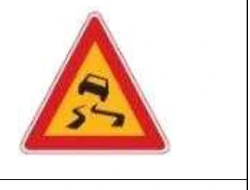

887. Địa điểm nào phù hợp nhất để lắp đặt biển báo này?

- ①Đường gấp khúc về bên trái mà hiện tượng chệch làn có thể xảy ra
- ②Đường trơn trượt do tuyết hoặc mưa
- ③Đường quanh co mà hiện tượng chệch làn có thể xảy ra
- ④Đường xuống dốc đứng, cần giảm tốc
Xem đáp án
Đáp án
② Đường trơn trượt do tuyết hoặc mưa
Căn cứ
Quy tắc thực thi luật giao thông đường bộ Phụ lục 6, Biển cảnh báo 126 Biển báo đường trơn được lắp đặt trên những con đường nơi ô tô, v.v. trơn trượt do đường đóng băng.
Phần căn cứ là bản dịch máy để tham khảo.